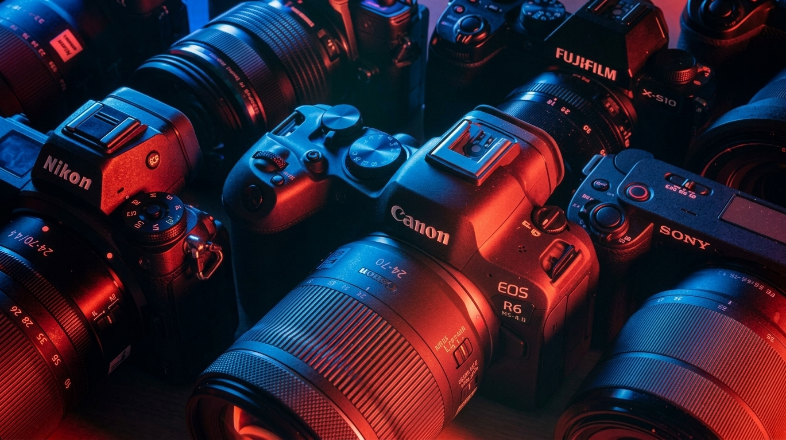

Development
Responsive websites and applications that feel clear, fast, and useful.
- Websites
- Web apps
- Games
Developer · Videographer · Editor
I’m Morale, a multidisciplinary creator in Bohol. I build useful experiences and shape raw moments into stories worth replaying.

Code with purpose.
Frames with feeling.
Selected work / 01
Real releases, published reels, and open source builds. Choose a project for the full story.
What I do / 02
Responsive websites and applications that feel clear, fast, and useful.
Purposeful coverage that finds the human moments inside every event or story.
Raw footage shaped through pace, sound, and color into a story that connects.
About Morale / 03
I care about how things work and how they make people feel. Whether I’m writing code or shaping an event film, I keep refining until the result feels inevitable.
“Useful enough to matter. Memorable enough to keep.”
Achievements / 04
First place
Recognized with first place for creating a testimonial that connected a real story with a clear, memorable message.
View the announcement on FacebookLet’s work / 05
Send the rough idea. We can figure out the rest together.
morale.me29@gmail.com